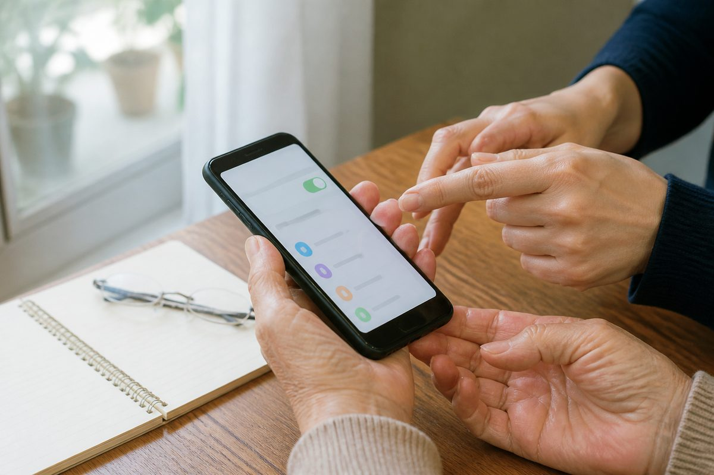

スマホの「困った」、
あなたのペースでサポートします。
操作方法の優しく丁寧なレッスンから、高齢者モード設定、スマホ代を抑えるプラン見直し、買い替え相談まで一挙にサポートします。

こんなお悩み、ありませんか？
- 新しくスマートフォンを買ったけれど、使い方がさっぱりわからない…
- 子供に聞いても「こんなの簡単でしょ」と怒られてしまい、聞きづらい…
- 毎月の携帯料金が高すぎるから安くしたいけれど、ショップに行くのが不安…
そんなスマートフォンや携帯電話にまつわるお悩みは、地域密着の便利屋「とよサポ」へご相談ください。
特定の携帯キャリアショップではない「中立な立場」だからこそ、お客様に本当に合った最適なアドバイスが可能です。
難しい専門用語を使わず、お客様のペースに合わせて何度も優しく丁寧にスマホの操作をお手伝いいたします。
とよサポのスマホサポート 2つの強み
スマホ基本操作の個別レッスン ＆ あんしん設定
- 電話のかけ方、文字入力、カメラ撮影など基本から覚えたい方
- ご家族とLINE（ライン）でメッセージや写真・ビデオ通話をやりとりしたい方
- 文字を大きくしたい、画面を使いやすい「高齢者モード」に設定してほしい方
何度同じことを聞いても大丈夫。安心のマンツーマン指導
「こんな簡単なこと、今さら聞けない…」と遠慮する必要は一切ありません。電話の出方やかけ方、文字の入力方法といった基本操作から、カメラで写真を撮ってご家族に送る方法、LINE（ライン）の使い方まで、お客様のやりたいことに合わせて、笑顔で何度でも優しく丁寧にお教えいたします。
使いやすさに配慮した「高齢者モード（かんたん設定）」への変更
「画面の文字が小さすぎて読めない」「操作アイコンが多すぎて迷ってしまう」という方のために、文字を読みやすく大きくする設定や、ボタンが大きくて直感的に操作できる「高齢者向けのシンプル・かんたん画面モード」への設定変更も丁寧にお手伝いいたします。
スマホ料金プラン見直し ＆ 初期設定・データ移行
- 「月々の携帯代が高い」と感じており、最適な安いプランを知りたい方
- ショップへ行って不要なオプションを契約させられないか不安な方
- 機種が古く壊れそうなので、買い替えたいけれど何を選べばいいか分からない方
キャリアにとらわれない中立的な「携帯プランの見直し相談」
ドコモ、au、ソフトバンクや、近年人気の「格安SIM（プラン）」の中から、お客様の毎月の使い方（通話時間やインターネットの使用量）を細かくヒアリングした上で、中立的な立場から最も家計に優しいプラン選びを分かりやすくご提案します。ショップで勧められがちな不要な有料オプション等の解約もお手伝い可能です。
初期設定からデータ移行まで、親身にサポート
「機種が古くなったので新しいスマホに買い替えたいけれど、自分一人では初期設定やデータ移行ができるか不安…」というお悩みもお任せください。新しいスマホが手元に届いた後の面倒な初期設定や、これまで使っていたスマホからの電話帳・写真などのデータ移行作業をすべて代行いたします。乗り換え後もすぐに安心してお使いいただけます。
料金のご案内
※上記金額は標準的なサポート時間・回数における目安の金額となります。複数回に分けてレッスンを受けたい場合なども、柔軟に対応いたします。
※お見積りは無料ですので、まずはお気軽にご相談ください。
※下関市内は出張費（エリア料金）無料です。現地（ご自宅）でのレッスン等でエリア料金がかかる場合は、事前にご説明いたします。ご成約の場合は調査・相談費用等は発生いたしません。 その他の詳しい料金表を見る
ご利用の流れ
- 1
お問い合わせ
お電話またはLINEにて、「スマホの使い方を教えてほしい」「携帯代を安くしたい」などとお伝えください。お客様の状況やご要望をお聞きします。
- 2
内容確認・事前お見積り
ご相談内容（操作指導、プラン見直し、初期設定サポートなど）に応じて、明確な料金をお伝えします（お見積りは無料ですのでご安心ください）。
- 3
親切・丁寧なサポート実施
ご自宅またはご指定の場所にお伺いし、お客様のペースに合わせて、専門用語を使わずに分かりやすくサポート作業やレッスンを行います。
- 4
ご確認・お支払い
操作ができるようになったこと、設定や見直しが完了したことをご確認いただき、問題がなければお支払いとなります。